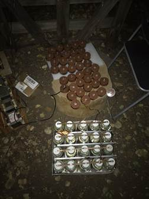
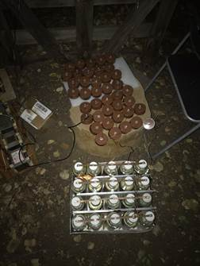

1 Million Volt Rotary spark gap Tesla Coil
This Rotary spark gap Tesla coil was a joint project I did with my friend Calvin Holmes. It has an approximately 1,000,000 Volt output and runs at around 1.5KW. The device consists of a 8.4kV power supply, a Toroid, a large inductive ballast, a capacitor bank, a rotary spark gap, and finally the actual Tesla coil. Seen above is the entire setup during operation.
Transformer
The "coil" of a Tesla Coil is actually an air cored transformer consisting of a primary and a secondary that extends vertically above it. Our secondary consists of approximately 1,500 turns of 24awg enameled copper wire wrapped around a 3 foot section of scrap PVC we repurposed. The outside was wrapped in Kapton tape to insulate it from the rest of the system. The primary consists of 10 turns of copper tubing held in place by custom wooden shunts. Tesla coils have an ideal ratio of inductance to capacitance, so we left the primary uninsulated to allow us to alligator clip the power supply to different sections of the primary, which allows us to tune the inductance. The air gap was also made variable by making the stand have an adjustable height for the secondary (see stand section for explanation). This is crucial as well because the transformer also has an ideal gap between the primary and the secondary for efficient operation.
Toroid
The Torid seen below is one of the defining features of the Tesla coil. Its only function is to decrease Corona discharge. Corona discharge is when air becomes ionized by high voltage, creating a faint plasma. This plasma creates a path for allow small amounts of current to flow through, causing what I would call a "pseudo short"(also known as corona loss). In the case of the Tesla coil this isn't a concern, but the ozone created in the process is. Ozone can be harmful to your lungs, among many other things. By reducing the ozone the Tesla coil becomes much more safe to be around.
The Toroid was made using a section of used aluminum air conditioning ducting. I cut both ends flush, twisted the straight section into a circle and then attached the two ends with silicone glue. I then cut a piece of plywood to match the diameter of the toroid and added a hole in the center so it would fit over the section of PVC above the primary. I then coated the piece with mineral oil to reduce its conductivity and attached a small plywood plate with 3/4" spacers to ensure it wouldn't slide all the way down the primary. I then glued on the Toroid onto the plywood section. For our recent VTTC upgrade I built a copper breakout point for the arcs to originate from. I began by cutting an 8" section of solid copper wire. I then used a file and grinding wheel to sharpen the tip and sanded the rest for appearences. Next I inserted it into a cheap aluminum lug which I attached to a L-shaped copper plate. I made the plate by crushing some scrap copper tubing in my Vice. Finally I drilled two screw holes in the plate and attached the breakout point to the Toroid.
Stand
Stand: The stand was made with only Plywood, 2x2, and some small 5" bolts. I cut 2 identical baseplates, cut holes in the center to fit the PVC, attached 2x2 on the corners to space them, and then bolted them together. The spacing provides 2 points of contact to the PVC, thus securing it laterally. I made a much smaller plywood plate to secure the PVC vertically. This plate was attached using 4 bolts with the nuts on the bottom, providing an easy way to raise or lower the secondary. All components were coated with mineral oil to reduce conductivity. I bent some leftover strips of copper to form the strike rail, which is placed above the primary and attached directly to ground. The strike rail is meant to prevent any arcs from the secondary hitting the primary, which would result in more than a million volts running back through the system and destroying it. With the strike rail present, the arcs will just hit the rail and go to ground instead, causing no damage.
Capacitors
Our Tesla coil uses 2 different capacitor banks in series, but I will be mainly talking about the bank I made as the others were bought by my friend and simply added together to achieve the desired capacitance. The bank I made consisted of 20 leyden jars. Leyden jars are a form of capacitor that uses a glass bottle as the central dielectric, and a conductive fluid inside it as one of the electrodes. The bottle is then coated in foil which forms the second electrode. I began by collecting bottles my family used and boiling them in a large pot to make the labels removable. I then used acetone to remove all remaining residue. This was done because any remaining coating would reduce the area of contact between the foil and the glass, thus reducing the capacitance, and promoting arcovers. I then baked the bottles to remove any remaining moisture and contaminants. I cut aluminum foil into pre-measured sections that perfectly fit the diameter of the bottle, and then rolled and glued them on, making sure to apply significant pressure to create greater contact. I then drilled holes in the caps of the bottles so I could feed through the bolts that contact the electrolyte. It is typical for these capacitors to be called "Saltwater capacitors'' because almost everyone uses saltwater as their electrolyte. Instead I decided to use water mixed with a very small amount of sodium hydroxide as our electrolyte. I did this because low concentration sodium hydroxide is far more conductive than salt water, resulting in lower losses within the capacitor bank. I put The individual capacitors in a cardboard box to create a uniform spacing between them, and we added aluminum bars in-between the foil-coated coutsides. The compression from the capacitors placement in the box resulted in good contact, thus connecting all of the outer electrodes together. The (anodes) were connected together using machined copper strips. I made the strips by sawing out a thin section from copper scrap, sanding them smooth, and then matching drilling holes for the tops of the bolt electrodes. The bolts were then inserted through, and nuts were added and tightened down.I then used low gauge microwave wire as jumper cables between the 4 rows, forming the final product. The thick walls of the glass bottles provide an estimated voltage rating of 50kV, and a capacitance of 20nF for the whole bank, or 1nF per capacitor. Ive included 3 pictures of another leyden jar bank I made recently (hasnt been used yet) to show the prosses of how I did the bakeing and foil application on the bottles.
 

Spark Gap
The spark gap works as a switching mechanism between the capacitor bank and the primary. When there is no active arc in the gap, the capacitor simply charges. But when the capacitor charges enough to spark across the gap, it becomes shorted to the primary, creating a short lived high frequency oscillation which drives the transformer. This oscillation ends when the capacitor can no longer sustain the arc in the gap, and then the capacitor recharges, thus repeating the cycle. This switching task can also be effectively performed by other more efficient devices such as a vacuum tube(arcs through air are not the most efficient). We are currently updating our circuit to use a vacuum tube instead of a spark gap, which will hopefully provide a slightly more powerful output, as well as some interesting arc shapes that are unique to vacuum tube tesla coils.
I began by cutting a small plywood stand and adding 2 sections of 2x4 to elevate the angle grinder. I secured the grinder using two 6" U-bolts and my own custom attachment bars made from random scrap metal. The electrode wheel was cut out of a piece of plexiglass from a broken window. I precision drilled a hole in the center so it could properly mount on the grinder (if the hole was off it would vibrate so violently it would rip itself apart). I drilled 2 smaller holes on opposite ends of the wheel and added two small bolts with loctite to prevent them from dethreading at the thousands of RPM they are subjected to. These serve as the bridging electrodes between the gap. Finally I mounted two sections of paired aluminum C-Channel on both sides of the wheel to serve as mounting points for the 2 other electrodes that form the "gap". These gap electrodes were just fine-threaded bolts that I inserted through the C-Channels and secured with 2 counter-threaded nuts. The fine threads allow one to tune the position of the electrodes easily, making it far easier to reach the smallest gap distance possible (accounting for wobble in the grinding wheel rotor). I connected leftover low gauge copper wire from my microwave disassembly to the backs of both electrodes, thus finishing the rotary spark gap.

Power supply
This power supply was made using four 1.2KW Microwave oven transformers. The transformers were taken from broken microwaves I collected over the course of the year. So far I've disassembled over 35 Microwaves, which allowed me to find 4 transformers with almost identical size and ratings. All of them are 120VAC input, 2100VAC output, with turn ratios of 17.5:1. By choosing identical transformers the efficiency of the power supply is maximized, as there is almost no discrepancy in terms of inductance, current, voltage, ext. The supply has a 8.4kV output. This is achieved by running two of the transformers hot-cored at 4200 Volts and 2 neutral at 2100 Volts (see wiring diagram below). As a result 8.4kV is achieved between the two hot-cored 4200V outputs. Unfortunately this supply alone pulls so much current that it will almost instantly blow any typical 15 amp breaker. Because of this it requires a ballast on its input to limit its current.


Ballast
This inductive ballast was made using another much larger Microwave transformer taken from a 1980's vintage microwave. We chose to use this transformer purely due to it's simplicity, because if we used smaller transformers from more modern microwaves, we would have needed to use more than one. All I did was desolder one end of the secondary from core and short it to the other end. I then screwed it onto a small piece of plywood for stability. We then attached one end of the primary to the 120V input and the other to the power supply. With this setup the current must flow through the ballast before it enters the power supply.